背景
最近关注到一套全新的分布式文件系统cubefs，这个之前的名称是chubaofs，看github上面应该有做切换了一段时间，但是不清楚什么原因,文档和包切换的还不是很彻底
所以在使用过程中需要注意下，注意下版本选择，这个在后面的文档里面再单独的说下这个问题
这个分布式文件系统跟ceph类似，也是采用了管理节点的角色，本篇就是讲如何获取这个管理节点的信息的，从官方的指导文档看，这块讲的还是不够详细
在github的issue里面已经提了一些咨询的，看下官方后面是否会补充，如果没有处理的，这边应该会基于我自己的经验做一些相关的说明
本篇就是基于这个背景写下的第一篇相关的文章，从开源存储来看，我们自己真正完全开源并且持续维护的软件并不是很多，网易数帆有Curve分布式存储开源，还有个juicefs是可以面向公网把对象转文件的，这个cubefs最开始应该是jd开源出来的，现在看是oppo在维护，大厂下台来开源，品质上可能有一定的保证，这个说可能而不是一定的原因是，本身的开发人员的流动性的可能比国外的要大,再一个这一套是不是对企业本身能够存在收益
这些开源系统的背景大多是目前的开源的存储已经满足不了当前的业务场景的需求，所以需要重新造一套，而开源，可以提升影响力，并且还能让更多人参与进来，用的人多，自然发现的问题越快，越多，而参与的人多，软件的健壮性也会越来越高，当然个人觉得开源软件一个重要的点是可持续性，之前的大厂也开源了很多东西，后面就慢慢不维护了，可能KPI的影响比较大，或者动力不足，希望这个系统能够更长久一些
问题来源
在系统里面做操作，应该是有个默认的习惯的，我们做的任何一个操作，应该是需要有反馈的，不管是失败还是成功，常规的软件基本离不开增删改查这几个操作的
那么这个软件的第一步就是部署的管理节点，问题就是来源于这里，我部署了三个节点，但是我想去查询我部署了哪三个节点，这块不清楚是不是我没找到方法，在文档里面是并没有看到相关的信息，所以在摸索了一番后，终于找到了查询的方法,这里同样提一点，好的软件设计应该是，同时两个人在同一个环境下面操作，A用户在B用户不看的情况下操作一个事情，A用户不告诉B用户具体的信息，B用户能够查到A用户的操作，这个说起来很拗口，我们就以这个举例子
- A用户增加了三个master节点，101，102，103
- A告诉B，我在101上面操作加了三个master节点
- B能够在A不提供更多信息的情况下，以最快的速度查询到加的哪些节点
这个在gluster里面就是gluster peer status
在ceph里面就是ceph mon dump或者ceph -s
在弄清楚这个问题的过程中，还新学习到了一些东西
查询的方法
搭建console平台
这个搭建过程就不说了，官方文档就有，这个使用的是老的2.2.2版本，新的改名字后的2.2.2版本的包没放对，也是提交了bug，等官方修复
这个登录的地方的默认密码硬编码不是很习惯，至少我需要找地方去看这个密码，并且可能会变的
默认用户名密码是
root
ChubaoFSRoot
后面版本可能改成CubeFSRoot，这个就是这种可能变的情况，可以有更好的办法处理
比较通用的做法
- 沿用操作系统的用户-这个是红帽官方web管理平台的做法（cockpit）
- 类似minio去采用环境变量，或者配置文件，在启动的时候进行一个设置
- 类似mysql那种通过命令行去设置，生成一个加密后的密码记录，然后也方便忘记的时候修改,重设密码
- 或者类似linux的密码逻辑，第一次启动页面设置一个密码，在本地生成加密的密码文件，需要修改密码删掉加密的文件
至少有这四种比较灵活的处理登录密码的方法,这块看后期是否会优化下，或者开发者本身觉得这个没多大问题
这里还是自我提问几个问题
- 从什么途径获取(设置)密码
- 怎么修改密码
- 忘记了密码无法登录怎么修改密码
获取token
这里我们需要登录，登录的时候会跳转，但是我们想获取到这个请求的发送方式，那么就需要设置记录日志
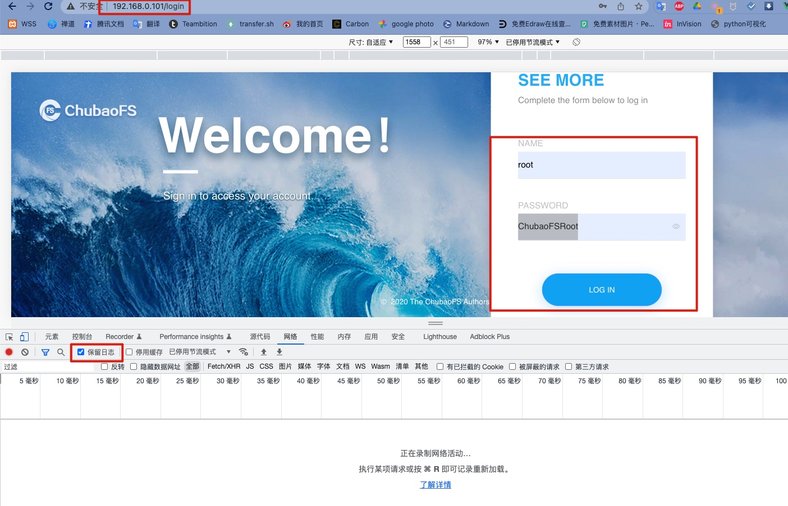
按F12进入调试模式，有个保留日志的选项，勾选上
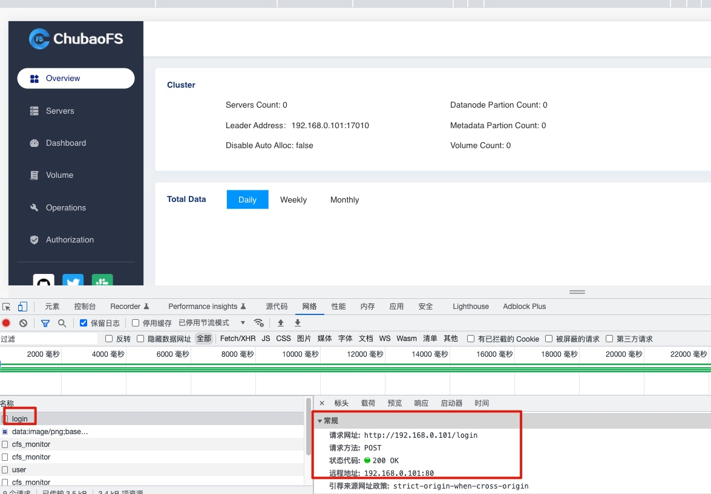
在网络tab页里面找到第一个post的请求login，这个从右边可以看到请求类型是post的
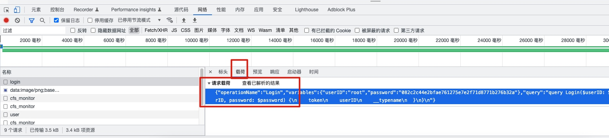
tab页里面有个载荷的，这个地方应该是请求的内容
{"operationName":"Login","variables":{"userID":"root","password":"082c2c44e2bfae761275e7e2f71d8771b276b32a"},"query":"query Login($userID: String, $password: String) {\n login(userID: $userID, password: $password) {\n token\n userID\n __typename\n }\n}\n"}
这个是个json的，后面我们会用到,上面是带了用户名密码信息的，这个后面的password应该是处理过的不明文发送的，所以这个记住就行，根据你的密码的固定值的
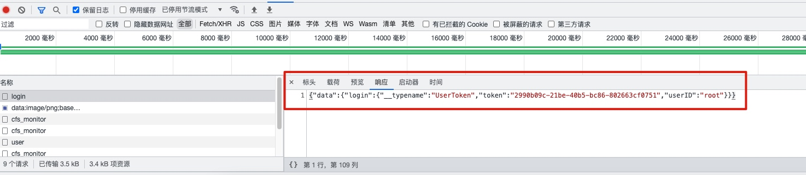
{"data":{"login":{"__typename":"UserToken","token":"2990b09c-21be-40b5-bc86-802663cf0751","userID":"root"}}}
这样就拿到了token
获取master的信息
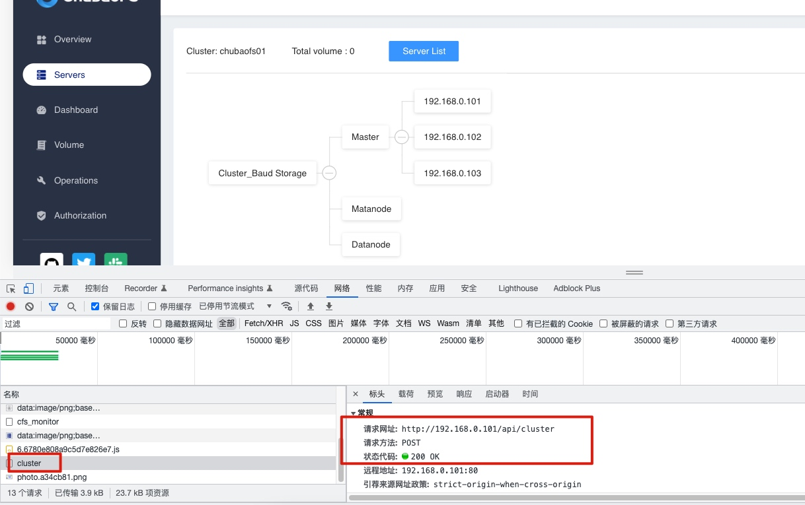
可以看到是对着http://192.168.0.101/api/cluster地址发送的POST请求
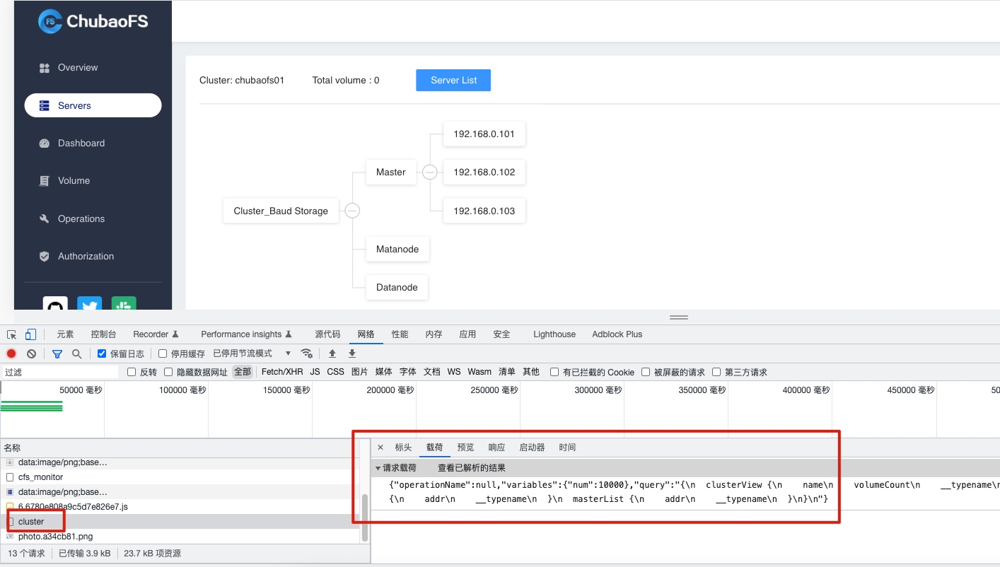
请求的内容如下
{"operationName":null,"variables":{"num":10000},"query":"{\n clusterView {\n name\n volumeCount\n __typename\n }\n dataNodeList {\n addr\n __typename\n }\n metaNodeList {\n addr\n __typename\n }\n masterList {\n addr\n __typename\n }\n}\n"}
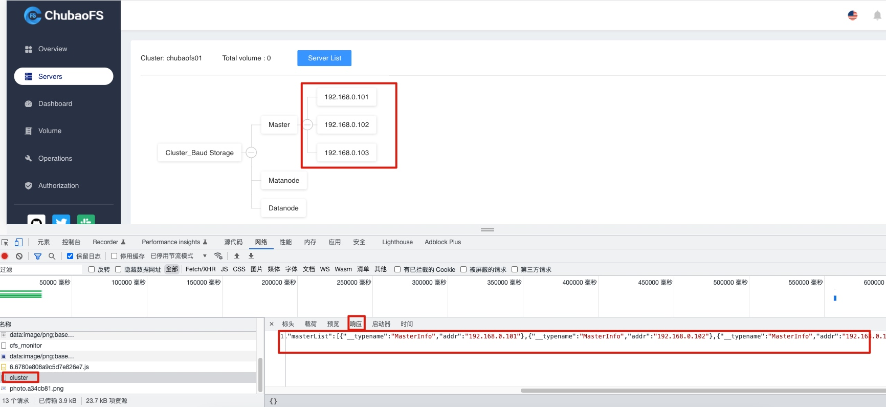
响应的内容如下:
{"code":200,"data":{"clusterView":{"__typename":"ClusterView","name":"chubaofs01","volumeCount":0},"dataNodeList":[],"masterList":[{"__typename":"MasterInfo","addr":"192.168.0.101"},{"__typename":"MasterInfo","addr":"192.168.0.102"},{"__typename":"MasterInfo","addr":"192.168.0.103"}],"metaNodeList":[]},"errors":null}
到这里我们就通过管理平台拿到master节点的信息，这里是通过graphql master api获取的信息
https://github.com/cubefs/cubefs/blob/master/proto/admin_proto.go
//graphql master api
AdminClusterAPI = "/api/cluster"
AdminUserAPI = "/api/user"
AdminVolumeAPI = "/api/volume"
这个可以自己了解下graphql是什么，这个跟之前的restful的api的最大区别是地址固定，可以通过一个固定的地址获取到不同的信息，把更多的解析工作放到后台了，这里知道是这个就行
我们梳理下流程：
- 获取token
- 拿着token去对着api发送信息
- 返回信息，拿到需要的信息
使用POSTMAN跑下上面的流程
POSTMAN获取token
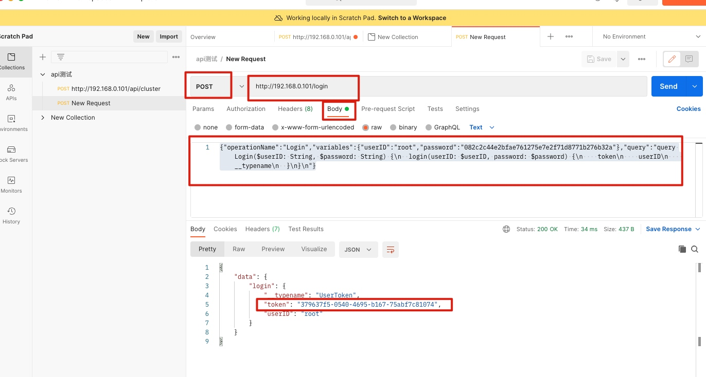
对着http://192.168.0.101/login发送post请求，内容为(上面chrome里面抓的):
{"operationName":"Login","variables":{"userID":"root","password":"082c2c44e2bfae761275e7e2f71d8771b276b32a"},"query":"query Login($userID: String, $password: String) {\n login(userID: $userID, password: $password) {\n token\n userID\n __typename\n }\n}\n"}
得到了token:379637f5-0540-4695-b167-75abf7c81074
这个记住就行
POSTMAN获取信息
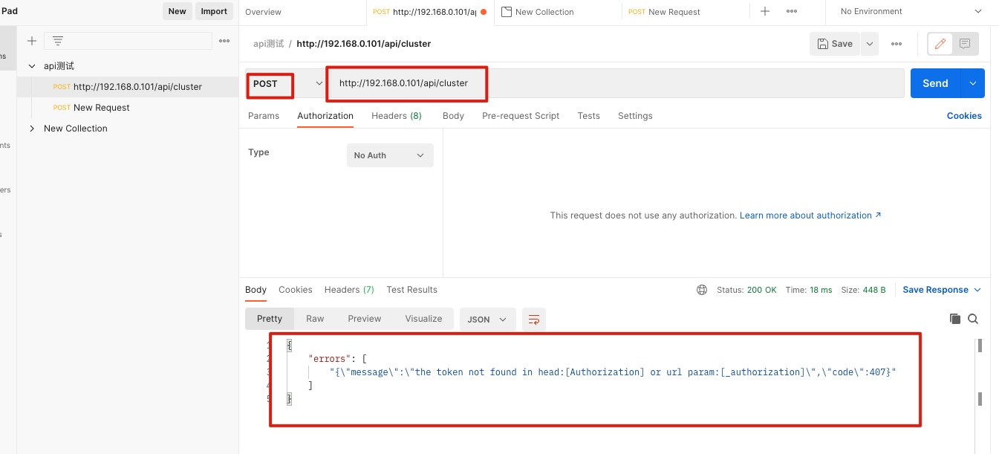
可以看到提示的是没有认证的相关的信息
我们加入认证的信息，在oauth2.0里面添加，注意保持prefix为空，填写上获取到的token的信息
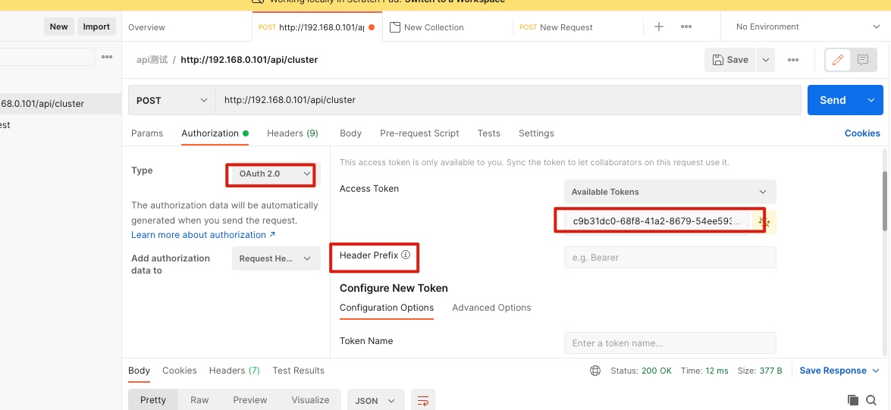
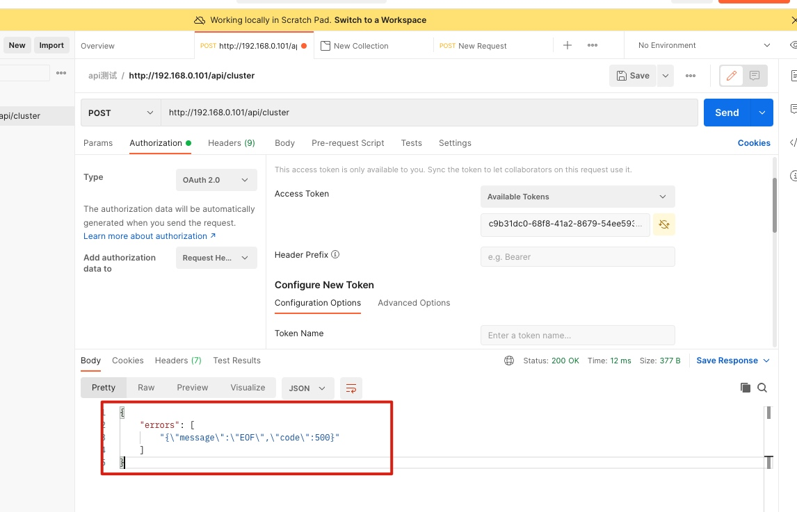
直接发送的话会提示上面的信息
{
"errors": [
"{\"message\":\"EOF\",\"code\":500}"
]
}
这个是因为没有把请求放进去，我们放入请求
{"operationName":null,"variables":{"num":10000},"query":"{\n clusterView {\n name\n volumeCount\n __typename\n }\n dataNodeList {\n addr\n __typename\n }\n metaNodeList {\n addr\n __typename\n }\n masterList {\n addr\n __typename\n }\n}\n"}
再次发送请求

可以看到得到了我们想要的信息
使用curl实现我们的请求
上面使用的是postman客户端，而我们可能更多的在命令行下面执行的，所以我们使用curl把上面完整实现一下
curl获取token
[root@lab101 cli]# cat login.json
{"operationName":"Login","variables":{"userID":"root","password":"082c2c44e2bfae761275e7e2f71d8771b276b32a"},"query":"query Login($userID: String, $password: String) {\n login(userID: $userID, password: $password) {\n token\n userID\n __typename\n }\n}\n"}
[root@lab101 cli]# curl -X POST http://192.168.0.101/login -d "@login.json"
{"data":{"login":{"__typename":"UserToken","token":"7537d007-6598-484e-a08d-95720593b3ec","userID":"root"}}}
上面的信息还是之前在chrome拿到的那个登录的信息,可以看到我们正确的获取到了token
我们发送请求
[root@lab101 cli]# cat post.json
{"operationName":null,"variables":{"num":10000},"query":"{\n clusterView {\n name\n volumeCount\n __typename\n }\n dataNodeList {\n addr\n __typename\n }\n metaNodeList {\n addr\n __typename\n }\n masterList {\n addr\n __typename\n }\n}\n"}
[root@lab101 cli]# curl -X POST -H "Authorization: 7537d007-6598-484e-a08d-95720593b3ec" "http://192.168.0.101:17010/api/cluster" -d "@post.json"
{"errors":["not found [_user_key] in header"]}
这个不清楚为什么跟postman相比多了个这个_user_key的提示，我们加上
[root@lab101 cli]# curl -X POST -H "Authorization: 7537d007-6598-484e-a08d-95720593b3ec" -H "_user_key:root" "http://192.168.0.101:17010/api/cluster" -d "@post.json"
{"data":{"clusterView":{"__typename":"ClusterView","name":"chubaofs01","volumeCount":0},"dataNodeList":[],"masterList":[{"__typename":"MasterInfo","addr":"192.168.0.101"},{"__typename":"MasterInfo","addr":"192.168.0.102"},{"__typename":"MasterInfo","addr":"192.168.0.103"}],"metaNodeList":[]},"errors":null}
可以看到，成功获取到这个信息，在这个时候发现了另外一个有趣的事情，我们看下
[root@lab101 cli]# curl -X POST -H "_user_key:root" "http://192.168.0.101:17010/api/cluster" -d "@post.json"
{"data":{"clusterView":{"__typename":"ClusterView","name":"chubaofs01","volumeCount":0},"dataNodeList":[],"masterList":[{"__typename":"MasterInfo","addr":"192.168.0.101"},{"__typename":"MasterInfo","addr":"192.168.0.102"},{"__typename":"MasterInfo","addr":"192.168.0.103"}],"metaNodeList":[]},"errors":null}
我没有用token居然在curl下也能够获取到这个信息的，但是在postman下面是必须加上的，所以这个是不是存在鉴权漏洞的，因为这个使用的是2.2.2版本的，后面更新下版本再看下,如果确认有问题再向官方提交了,目前确认2.5.2版本还是有这个问题的,已经提交相关问题，等待回复
鉴权问题
总结
在尝试获取master信息过程中，学习了一些请求相关的知识，同时也发现了一些可以优化的点，这个先自己记下来就行